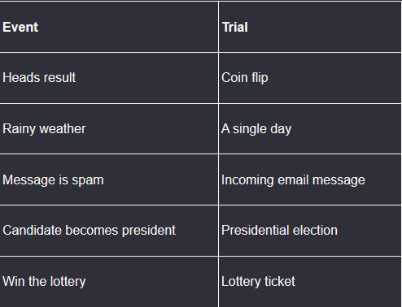
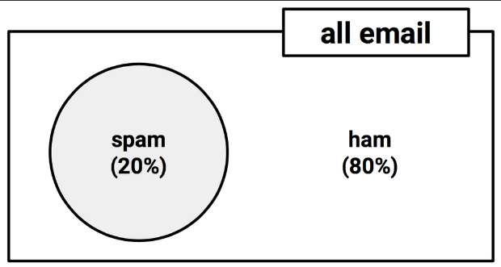
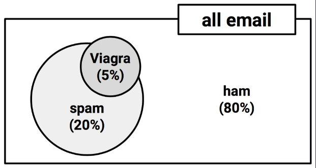
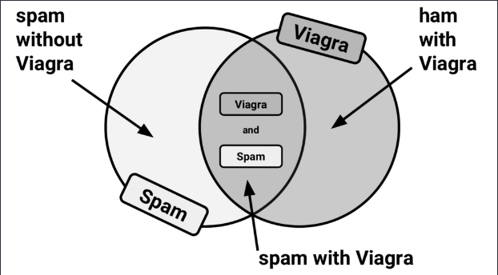
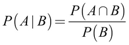
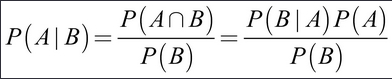
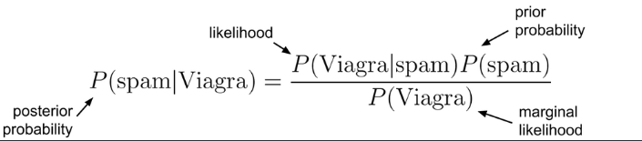
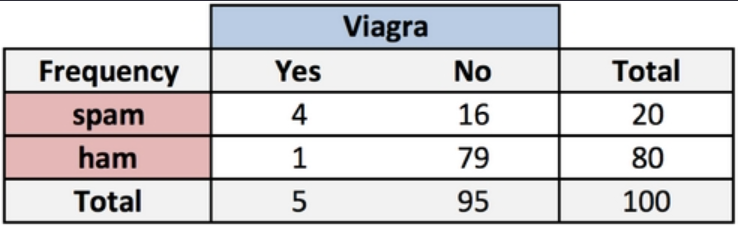
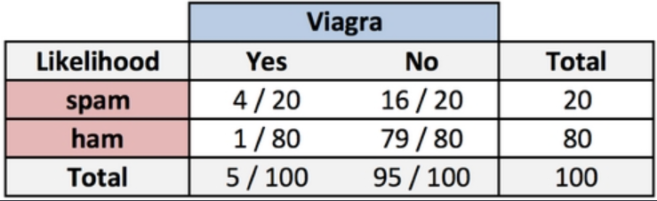

Understanding Naive Bayes
Supervised Naive Bayes Prediction
Marcus Birkenkrahe
Created: 2023-03-09 Thu 12:18
Naive Bayes

- Lecture notes in Markdown file (4_naive_bayes.md) - Source: Lantz (2019), chapter 4, pp. 89-123 - DataCamp assignment: "Supervised learning with R", ch. 2
What you will learn
- Classification using Naive Bayes
- Bayes' theorem and naive assumptions
- Text classification use case
- R packages for text mining & visualization
- Application: SMS junk message filter
Probabilistic methods

- Probabilistic methods describe uncertainty - They use data on past events to extrapolate future events - Such predictions are subject to many assumptions
Probability
- A probability P is a number between 0 and 1 (0% to 100%) - P captures the chance that an event will occur based on evidence - P = 0 indicates that the event will definitely not occur - P = 1 indicates that the event will occur with absolute certainty
Bayesian methods
- Training data are used to calculate outcome probability - Evidence is provided by labeled feature values - Classifier uses calculated probabilities to estimate class
Applications

- Text classification, e.g. spam filter
- Anomaly detection in computer networks
- Diagnosing medical conditions
Basic idea

The estimated likelihood of an event or potential outcome is based on the evidence from multiple trials or opportunities for the event to occur.
Spam vs. Ham

In email trials, spam and ham are mutually exclusive and exhaustive events.
Joint probability

'Viagra' is a non-mutually exclusive event. Its overlap with 'spam' is large than its overlap with 'ham'.
Venn diagrams

Calculating P(spam ∩ Viagra) depends on the joint probabilities of the two events, on their dependency.
Bayes' theorem

- For independent events, P(A ∩ B) = P(A) * P(B)
- P(Viagra AND spam) = (5/100) * (20/100) = 0.01
- P(A|B) is the probability of A given B occurred
- P(A|B) is the probability of A conditional on B

Bayesian spam filter

To calculate the components, construct a frequency table that records how often 'Viagra' appeared in 'spam' and 'ham' messages.

Likelihood table

The rows of the likelihood table contain the conditional probabilities for "Viagra" (yes/no) given that an email was spam or ham:
P(Viagra = Yes | spam) = 4/20 = 0.20 P(spam & Viagra) = P(Viagra|spam) * P(spam) = (4/20)*(20/100) = 0.04 P(spam|Viagra) = (4/20) * (20/100) / (5/100) = 0.80
References
- Lantz (2019). Machine Learning with R (3e). Packt.
- Majka M (2019). naivebayes: High Performance Implementation of the Naive Bayes Algorithm in R. R package version 0.9.7, https://cran.r-project.org/package=naivebayes.